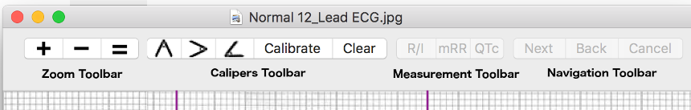

Introduction – EP Calipers 101
Introduction – EP Calipers 101
Electronic calipers
EP Calipers provides electronic calipers for measuring intervals on images of electrocardiograms (ECGs) or electrophysiologic recordings. In the electrophysiology lab electronic calipers are included as part of the recording system. EP Calipers is intended to provide similar electronic calipers for use on your Mac. The electronic calipers of EP Calipers are more accurate, easier to use, and less dangerous than mechanical calipers (they don't have sharp points!).
Quick start
When EP Calipers starts, a sample ECG is loaded. Click a caliper icon on the toolbar to add a caliper to the screen. Move the caliper around by clicking on the caliper's crossbar and dragging it with the mouse or your finger on the track pad. Expand and contract the caliper by dragging the bars on either end of the caliper. Pinch and zoom the underlying ECG or use the zoom toolbar to enlarge or shrink the image as needed. If the ECG is bigger than your screen, you can drag the image around with your mouse or use two finger scrolling if you have a trackpad. As an alternative to loading an image you can make the main window transparent and use your electronic calipers to measure any image that is open on your Desktop. The rest of these help pages will go over how to load ECG images, add and delete calipers, calibrate the calipers and make advanced measurements like the corrected QT interval.
Toolbar
The program is controlled either by the toolbar buttons at the top of the window, or by the menu at the top of the screen. The default toolbar looks like this:

Figure 1: Toolbar
Note that not all toolbar buttons will be available all the time, depending on whether calibration has been performed. Some toolbar buttons are disabled when in transparent window mode also. Disabled toolbar buttons are "grayed" out. You can customize the toolbar items if you wish. On newer Macs some of the toolbar items are also shown on the Touch Bar.
Zoom toolbar
 Zoom in
Zoom in Zoom out
Zoom out Zoom to actual size
Zoom to actual size
Calipers toolbar
 Add time (horizontal) caliper
Add time (horizontal) caliper Add amplitude (vertical) caliper
Add amplitude (vertical) caliper Add angle caliper
Add angle caliper- Calibrate Calibrate caliper
- Clear Clear all calibration
Measurement toolbar
- Rate/Int Toggle heart rate and time interval
- mean RR Calculate mean interval from several intervals
- QTc Measure corrected QT (QTc)
Menus
Nearly all the functions of the app are contained in the main menu commands at the top of the screen. Note that there are keyboard shortcuts shown in the menu for many of the programs's functions. For example, it is easier to rotate an image using a keyboard shortcut key then a menu command. As with toolbars, some menu commands are disabled when their use is not allowed. For example, image rotation is not allowed after calipers have been calibrated. It is necessary to clear calibration to restore the rotation menu commands.
Keyboard shortcuts
| Key | Function |
|---|---|
| ⇧⌃R | Rotate image 90° right |
| ⇧⌃L | Rotate image 90° left |
| ⌃R | Rotate image 1° right |
| ⌃L | Rotate image 1° left |
| ⌘R | Rotate image 0.1 right |
| ⌘L | Rotate image 0.1 left |
| ⌃0 | Reset image rotation |
| ⌘+ | Zoom in |
| ⌘- | Zoom out |
| ⌘= | Zoom to actual size |
| ⌃E | Image editor |
| ⌃H | Toggle transparent window |
| ⌃T | Add time caliper |
| ⌃A | Add amplitude caliper |
| ⌃G | Add angle caliper |
| ⌃C | Calibrate |
| Del | Delete selected caliper |
| ⌘Del | Delete all calipers |
| ^P | Prev page of multipage PDF |
| ^N | Next page of multipage PDF |
| ⌥⌘G | Go to PDF page |
| ← | Tweak caliper component left |
| → | Tweak caliper component right |
| ↑ | Tweak caliper component up |
| ↓ | Tweak caliper component down |
| ⌘← | Finely tweak caliper component left |
| ⌘→ | Finely tweak caliper component right |
| ⌘↑ | Finely tweak caliper component up |
| ⌘↓ | Finely tweak caliper component down |
| ⌘, | Open preferences |
| ⌘O | Open file |
| ⌘N | New window |